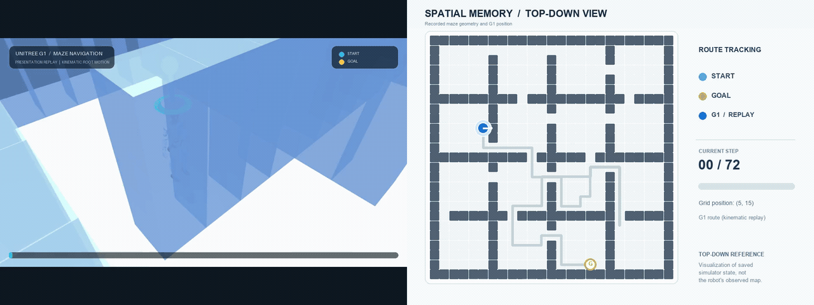
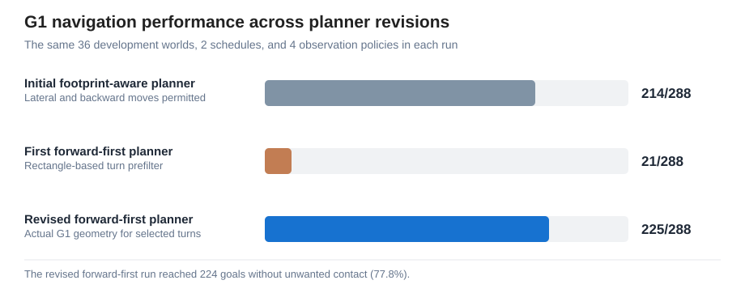
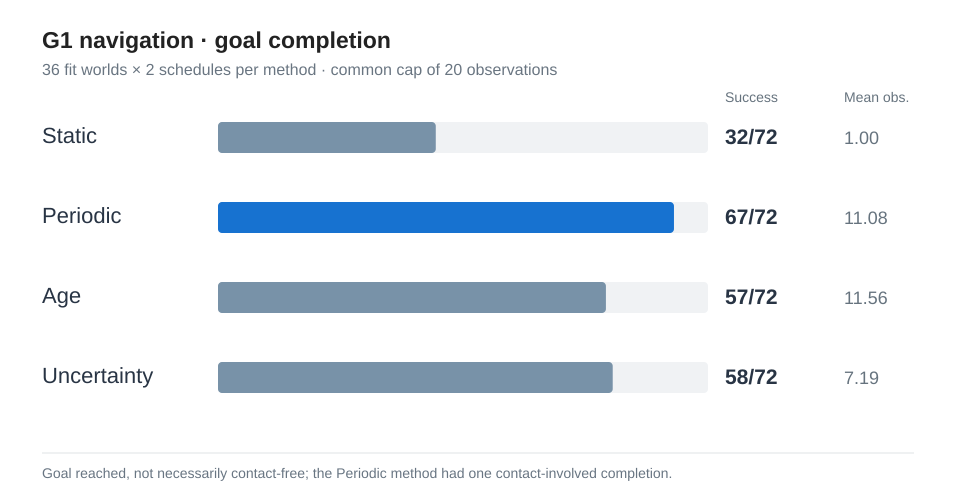

Humanoid Spatial Memory
3D Perception and Navigation in Changing Indoor Environments
Abstract
How should a humanoid robot update its spatial memory and navigate safely when indoor obstacles change? I built a MuJoCo testbed with a Unitree G1 model, three-dimensional (3D) ray perception, a two-dimensional (2D) occupancy memory, A* route planning, and collision-checked motion. I prepared 36 saved indoor environments and compared four observation policies (Static, Periodic, Age, and Uncertainty) over 288 matched episodes per planner configuration. When I changed the robot to walk primarily forward, an overly conservative rectangular collision approximation made the planner reject feasible turns: goal completion fell to 21/288 (7.3%). After replacing that turn prefilter with MuJoCo collision checks on selected turns only, completion recovered to 225/288 (78.1%), including 224 contact-free completions. The revision exposed how geometric modeling assumptions can limit navigation more than the robot's actual body. These are kinematic simulation results, not physically actuated bipedal walking.
36 development environments (12 room-graph layouts, 12 rectangular-partition layouts, 12 maze layouts) · Two schedules per world · Four policies · Fixed random seed 42 · 80-step limit · Maximum 20 observations including initialization · Assumed 0.75 m/grid cell

An earlier, separate overhead route animation is also available.

01 / Research Question
When is a remembered map worth checking again?
A corridor that was clear yesterday may be blocked by furniture today. A passing person, however, should not necessarily be recorded as a permanent wall. Re-observing everything continuously is expensive, but trusting an old map can lead to failed routes. This project studies how different observation schedules balance navigation success, sensing cost, and map freshness in changing indoor spaces.
Rather than claiming a new memory algorithm, I first evaluated established scheduling approaches in a shared, reproducible simulation. The same underlying robot model, sensor, planner, environment instances, and observation cap were used for all four policies.
02 / System
From MuJoCo rays to collision-checked actions
- 1. Partial 3D sensingA torso-mounted horizontal ray scanner detects visible surfaces with 61 rays, a 120° field of view, and a 6 m range. Hidden cells remain unknown.
- 2. Spatial memoryMeasurements are projected onto a 2D grid: unknown, free, or occupied. The memory controller decides when another observation is taken.
- 3. Footprint-aware routingA* (pronounced A-star), a shortest-path search algorithm, searches position-and-heading states using remembered obstacles and the public dimensions of G1. Rejected actions are tracked separately from occupancy memory.
- 4. MuJoCo collision checksOnly the chosen movement is checked against 3D geometry before execution. Rotation and translation can be rejected without granting the planner a hidden map.
Walls, changing objects, and pedestrian proxies exist in the MuJoCo scene. The agent receives measured occupancy, not simulator obstacle labels or future pedestrian trajectories. Pedestrian proxies follow predefined motion and do not react to G1.

03 / Experimental Design
Four policies, matched conditions
Static observes once at the beginning. Periodic refreshes at regular intervals. Age requests observations based on how old remembered information is. Uncertainty requests observations based on its uncertainty estimate.
I prepared and reused 36 saved development environments, with 12 from each of three floor-plan families: R (Room Graph), containing rooms connected by narrow doors; BP (B-prime Rectangular Partition), containing rectangular rooms connected by selected doorways; and M (Maze), containing narrow, winding corridors. All layouts are based on saved 25 × 25 grids, not newly generated scenes for these comparisons.
The 36 development environments
The following diagrams show the actual saved wall layouts from above. Cyan marks each start position, and gold marks the goal. Select a diagram to view its full-size version. On narrow screens, swipe horizontally to examine individual layouts.


The diagrams show fixed maze geometry and start/goal locations. Moving pedestrian trajectories and the two schedules of obstacle changes are not shown. See all 36 mazes in one image or view their saved identities and coordinates.
Each world had two saved obstacle-change schedules. Every observation policy ran on the same 72 world–schedule pairs, resulting in 36 × 2 × 4 = 288 episodes for each planner variant. Runs used random seed 42, an 80-step limit, at most 20 observations per episode, and an assumed scale of 0.75 m per cell. The 36 development or fit worlds are not independent held-out test environments, and two schedules from one world are not independent samples.
The simulated G1 moves and rotates kinematically. Its actual MuJoCo collision geometry checks only the action selected by the planner. Rejected actions are recorded separately from observation memory; no hidden world map or collision tests of unselected actions are provided to the planner.
04 / Results
Recovering navigation by correcting turn clearance

| Planner configuration | Goals | Contact-free goals | Goal rate |
|---|---|---|---|
| Earlier planner (lateral/backward moves permitted) | 214/288 | 213/288 | 74.3% |
| Initial forward-first (rectangle-based turn rejection) | 21/288 | 21/288 | 7.3% |
| Revised forward-first (selected-turn MuJoCo check) | 225/288 | 224/288 | 78.1% |
Revised forward-first results by observation policy
The four policies differ in when they refresh their observed map. The corrected forward-first planner and the same safety checks are used for every policy.
| Observation policy | Goals | Contact-free goals | Mean observations |
|---|---|---|---|
| Static | 36/72 (50.0%) | 36/72 | 1.00 |
| Periodic | 67/72 (93.1%) | 66/72 | 11.11 |
| Age | 66/72 (91.7%) | 66/72 | 11.79 |
| Uncertainty | 56/72 (77.8%) | 56/72 | 8.28 |
Revised forward-first results by maze family
| Family | Initial forward-first | Revised forward-first | Contact-free revised |
|---|---|---|---|
| R: Room Graph | 0/96 | 74/96 | 74/96 |
| BP: Rectangular Partition | 21/96 | 88/96 | 88/96 |
| M: Maze | 0/96 | 63/96 | 62/96 |
The revised planner completed 3,964 selected turns, with only three turns rejected by the actual MuJoCo collision shield and zero unselected collision queries. Two episodes experienced unwanted pedestrian contact; one nevertheless reached the goal and is excluded from contact-free completion. These remain simulation results on saved development environments, with no claim of physical walking or real-world safety.
Earlier observation-scheduling baseline
Before introducing forward-first behavior, I compared the observation strategies using a more permissive kinematic planner that allowed lateral and backward translation. The results below are preserved for transparency, but they should not be conflated with the revised forward-first experiment.

For the historical baseline, paired world-clustered bootstrap estimates gave a Periodic minus Uncertainty goal-completion difference of +12.5 percentage points (95% confidence interval: +2.8 to +23.6 points). This estimate does not describe the revised forward-first run.
05 / Failure Analysis
Why did forward-first navigation initially fail?
Changing the default movement policy to forward travel with explicit in-place turns first reduced goal completion to only 21/288. All 96 Room Graph episodes and all 96 Maze episodes stopped without a successful move or turn. Initially, this looked like a problem with narrow corridors.
I investigated all 36 saved starting locations. Using the actual G1 MuJoCo collision geometry, the robot could turn 90 degrees in either direction at all 36 starts, including with each scene's initially saved obstacles and pedestrians. However, the A* planner's axis-aligned bounding-box (AABB) approximation incorrectly rejected both turns at 12/12 R starts, 12/12 M starts, and 7/12 BP starts. A rectangle around the robot's rotated footprint can overlap a nearby wall cell even when the actual robot clears it.
Instead of querying every possible turn against hidden simulator geometry, I removed the AABB pre-rejection of turns only. The planner now proposes a turn from its observed-map state, and the actual MuJoCo model checks only the selected turn. If that turn fails, attempted-action feedback prevents repeated selection until relevant local evidence changes. Translation clearance still uses the original footprint approximation. This preserves the separation between what the robot knows and what the simulator knows.
A diagnostic allowed one initial backward step in selected cases, but that was not the main fix. Under a full-map diagnostic assumption, only two Room Graph mazes gained a feasible route after backing up. The large recovery to 225/288 came from changing turn-clearance handling while keeping forward-first navigation.
The improvement does not remove all failure modes. Two revised-run episodes recorded unwanted pedestrian contact, and incomplete observations, changing obstacles, grid discretization, and the 80-step horizon still constrain performance. The original planner's 214/288 result used different movement permissions, so it is retained as a historical comparison rather than evidence that one observation policy is universally best.
06 / Limitations & Next Steps
Toward more realistic humanoid navigation
- No physical walking: G1 uses kinematic waypoint translation and turning. Joint-level gait, balance, falls, and safe foot placement are not simulated.
- 2D memory from 3D rays: The sensor uses one horizontal ray plane. There is no depth-camera noise, vertical scan, or 3D voxel memory.
- Simplified people: Pedestrians are moving capsule proxies, not articulated, reactive humans.
- Development-only comparison: All 36 saved fit worlds and a single random seed were used across successive planner revisions. Results should be tested on unseen layouts and additional random seeds.
- Uncalibrated scale: The 0.75 m/cell grid remains an explicit modeling assumption.
Next steps are to investigate pedestrian contact, refine sensing and route recovery, validate on held-out layouts and additional seeds, introduce articulated human models, and eventually integrate physically actuated G1 walking. The work currently evaluates simulated spatial memory and navigation, not deployable humanoid locomotion or real-world safety.
Code, data & reproducibility
Source code, saved maze maps, per-episode records, movement-policy comparisons, turn-clearance diagnostics, and provenance hashes are available in the research repository. Each planner revision keeps its own 288-episode result directory; earlier raw results were not replaced.
Source code · All 36 maze diagrams · Turn-clearance design note · 36-start diagnostic (CSV) · Planner comparison (JSON) · Revised 288-episode records (CSV) · Per-maze results (CSV)

Original flexible-movement comparison: paired analysis. Initial forward-first comparison: summary. All use saved development/fit worlds, not held-out test sets. The Unitree G1 model comes from MuJoCo Menagerie under its separate upstream license.